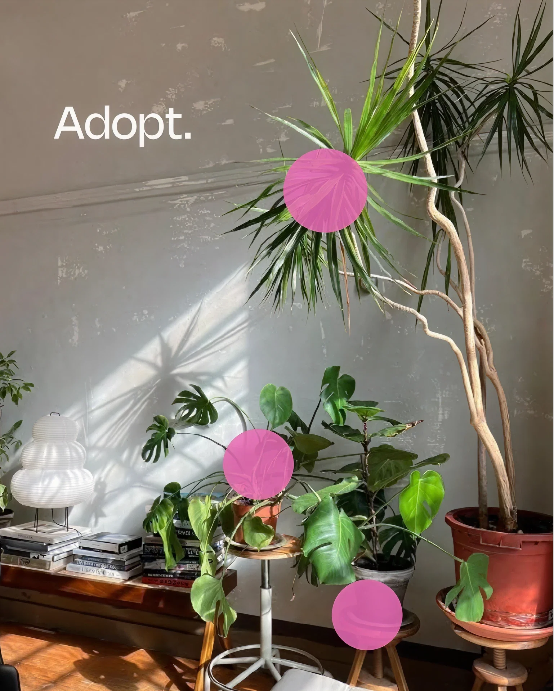
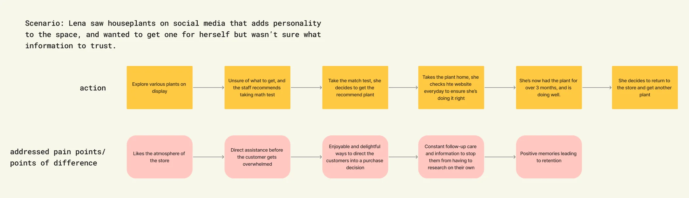
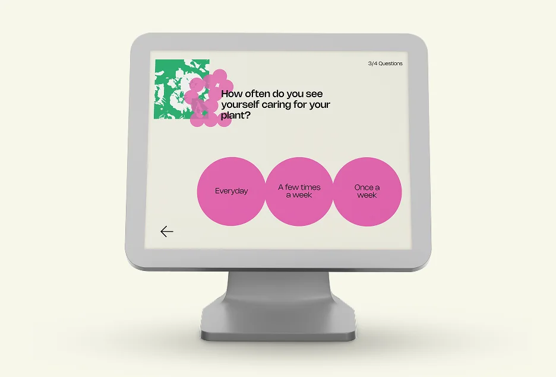
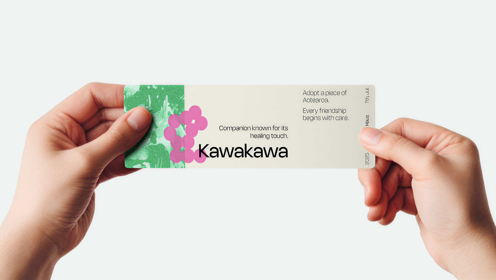
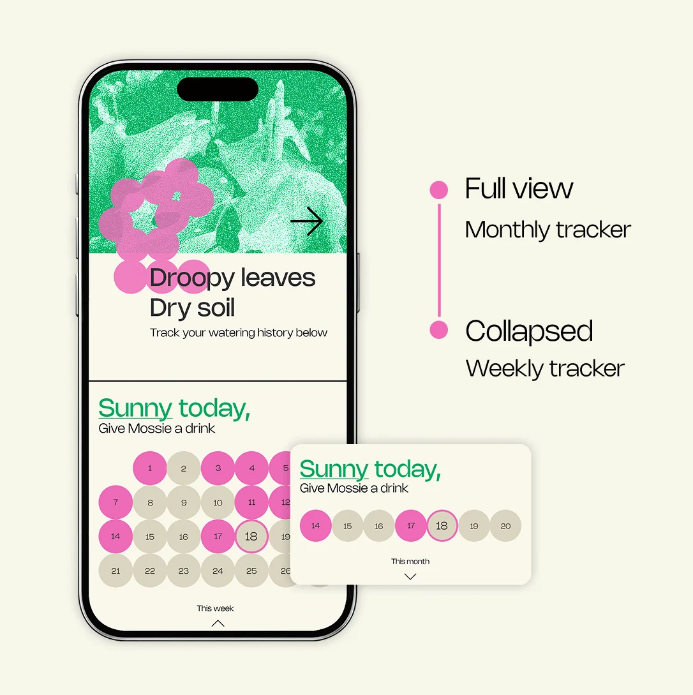

Akea Haus
Akea Haus is an offline retail space that creates opportunities for people to feel connected to native plants by 'adopting' them as a form of companion so that care comes naturally.
Around 80% of Aotearoa's native plants are endemic, yet they occupy only about 10-15% of the land. Conversation campaigns and activations have raised awareness, but participation remains low.
The gap between participation and awareness seems to stem from guilt- and duty-driven conservation messaging, creating negative associations and short-term engagement.
The opportunity arises from COVID-19 lockdown, when people began treating plants as a form of quiet companionship in their homes, and from the social phenomenon of various forms of families being recognised.

Plants fulfilled emotional needs like responsibility, routine and ownership, but with lower effort than a pet. The benefits were particularly popular among young professionals in their mid-20s to mid-30s who are seeking companionship, but often lack the time and finances for pets. People reported stronger attachment to plants that carried personal meaning (e.g. gifted plants, special species, bought at a special place) than to self-purchased ones.
If emotional bonds and personal meaning increase care, reshaping people's perception of native plants as 'companions' rather than 'causes' could bridge the gap between knowing and caring.



Brand Strategies
Akea Haus connects neglected native plants with people seeking low-effort companionship by laying the foundation for long-term shifts around native plant life and Aotearoa's unique flora.
Lasting impact
We focus on the long-term goal of laying the foundation for a shift in how people relate to native flora, rather than seeking immediate, small actions.
Connection over consumption
Establishment of deeper relationships with plants are prioritised over one-off transactional interactions.
Personal connection
Through 'adopting', individuals commit to care for a plant. This shift in mindset establishes lasting associations with native plants. Not just informed action, but affection and memory tied to them.
Positive reframing
We aim to replace duty- or guilt-based conservation with delightful, memorable experiences that reshape how people feel about native flora.
User Journey
A physical space where visitors are surrounded by native plants in a relaxed, social environment, creating passive positive associations instead of forced messaging.


An interactive quick quiz helps visitors discover a suitable companion plant based on lifestyle and preferences, lowering decision pressure and making the experience playful rather than transactional.

The match result is printed as a physical label with an NFC tag, attached to the newly adopted plant. Serving as a bridge between offline and online, leading to a personalised plant profile and care space.

Online Support
The digital experience shifts the focus from 'keeping the plant alive' to 'building a relationship'. Each plant has a personalised profile with locally tailored information and light documentation features to create a living record of the relationship.

The experience offers both quick, practical tips and deeper guidance, adapting to user feedback and the target audience's preference for bite-sized information, allowing learning at their own pace.

An interactive water tracker uses local climate data to suggest watering, reducing the anxiety of 'am I doing this right?' while subtly teaching about environmental context.